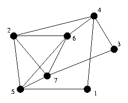
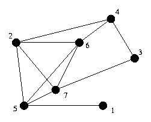
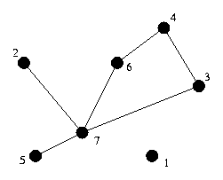
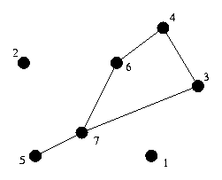
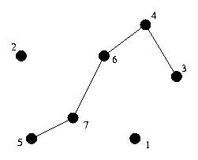
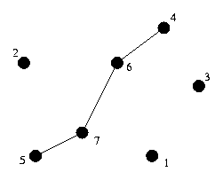
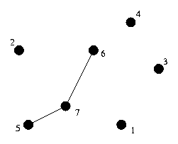
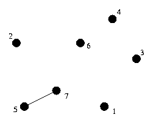
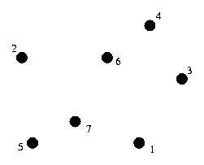

这是几乎全部机翻的版本。几乎可以肯定的是，这个翻译需要改进。
例题：穿越栅栏
农夫约翰拥有大量围栏，他必须定期检查它们的完整性。农民约翰通过维护围栏的交叉点列表，以及在每个交叉点点结束的围栏来跟踪它们。每个围栏有两个端点，每个端点位于一个交叉点，交叉点可能只是单个围栏的终点。当然，两个以上的围栏也可能共享一个端点。
给定围栏的布局，计算农夫约翰是否有办法骑马去他所有的围栏，且不需要不止一次地穿越围栏。约翰可以在任何地方开始和结束，但不能穿过他的田地（在交叉点之间穿行的唯一方法是沿着围栏）。如果有方法，找出一种方法。
问题的抽象
给定：无向图
找到一条只使用每条边一次的路径。这样的路径称为欧拉路径。如果路径在同一顶点开始和结束，则称为欧拉回路。
算法
检查图中是否有欧拉路径或回路实际上很容易; 使用下列两条规则。
- 图中有欧拉回路，当且仅当它是连通图（在去掉度数为0的所有结点之后），且每个结点具有“偶数度”。
- 图中有欧拉路径，当且仅当它是连通图，且除了两个结点之外的每个结点的度数均为偶数。
- 在第二种情况下，具有奇数度的两个结点中的一个必须是起始结点，而另一个是结束结点。
算法的基本思想是从图的某个结点开始，并确定回到同一结点的回路。现在，随着回路的添加（事实上是以逆序），算法确保从该路径上所有结点出发的所有边都已被使用。如果该路径上还存在一些具有未使用的边的结点，则算法找到从该结点开始的使用这条边的回路，并将该新回路拼接到当前回路中。这一直持续到原始回路中每个结点的所有边都被使用为止，由于图是连通的，这意味着已经使用了所有边，因此得到的回路是欧拉回路。
更正式地说，要确定一个含有欧拉回路的图中的欧拉回路，选择一个起始结点并对其进行递归。在每个递归步骤中：
- 选择一个起始结点并对该结点进行递归。在每一步中：
- 如果结点没有邻居，则将结点加入到回路中并返回
- 如果结点具有邻居，则创建邻居列表并对其进行处理（包括从需要处理的结点列表中删除它们），直到该节点不再有邻居为止
- 为了处理结点，删除当前结点与其邻居之间的边，递归邻居，然后将当前结点加入到电路中。
这是伪代码：
1 | # circuit是一个全局数组 |
为了找到欧拉路径，只需找到其中一个具有奇数度的结点，并对它调用
find_circuit。
这两种算法的时间复杂度都是O(m + n)，其中m是边数，n是结点数，如果图是以邻接表形式存储的话。对于较大的图，存在运行时栈溢出的风险，因此你可能需要使用自己的栈。
执行示例
考虑下图：

假设选择随机邻居时选择的是编号最小的邻居，算法执行过程如下：

栈：
当前位置：1
回路：

栈：1
当前位置：4
回路：
栈：1 4
当前位置：2
回路：
栈：1 4 2
当前位置：5
回路：
栈：1 4 2 5
当前位置：1
回路：
栈：1 4 2
当前位置：5
回路：1
栈：1 4 2 5
当前位置：6
回路：1

栈：1 4 2 5 6
当前位置：2
回路：1

栈：1 4 2 5 6 2
当前位置：7
回路：1

栈：1 4 2 5 6 2 7
当前位置：3
回路：1

栈：1 4 2 5 6 2 7 3
当前位置：4
回路：1

栈：1 4 2 5 6 2 7 3 4
当前位置：6
回路：1

栈：1 4 2 5 6 2 7 3 4 6
当前位置：7
回路：1

栈：1 4 2 5 6 2 7 3 4 6 7
当前位置：5
回路：1
栈：1 4 2 5 6 2 7 3 4 6
当前位置：7
回路：1 5
栈：1 4 2 5 6 2 7 3 4
当前位置：6
回路：1 5 7
栈：1 4 2 5 6 2 7 3
当前位置：4
回路：1 5 7 6
栈：1 4 2 5 6 2 7
当前位置：3
回路：1 5 7 6 4
栈：1 4 2 5 6 2
当前位置：7
回路：1 5 7 6 4 3
栈：1 4 2 5 6
当前位置：2
回路：1 5 7 6 4 3 7
栈：1 4 2 5
当前位置：6
回路：1 5 7 6 4 3 7 2
栈：1 4 2
当前位置：5
回路：1 5 7 6 4 3 7 2 6
栈：1 4
当前位置：2
回路：1 5 7 6 4 3 7 2 6 5
栈：1
当前位置：4
回路：1 5 7 6 4 3 7 2 6 5 2
栈：
当前位置：1
回路：1 5 7 6 4 3 7 2 6 5 2 4
栈：
当前位置：
回路：1 5 7 6 4 3 7 2 6 5 2 4 1
扩展
重边可以通过完全相同的算法来处理。
如果认为自环会为结点度数增加2（一进一出），则自环也可以通过完全相同的算法来处理。
有向图仅当强连通且每个结点的入度等于出度时才有欧拉回路（除了入度和出度均为0的节点）。算法完全相同，只是由于此代码找到环路的方式，您必须以相反的顺序遍历边。
在有向图中找到欧拉路径更难。如果您有兴趣，请阅读Sedgewick的书。
例题
飞机跳跃
给定一系列城市，以及这些城市之间的航班，确定是否存在一个航班序列，使得你顺序搭乘每个航班一次，最后回到开始的地方。
分析：这相当于在有向图中找到欧拉回路。
行进中的奶牛
农夫约翰有两种类型的奶牛：黑色安格斯奶牛和白色泽西奶牛。前几天约翰的妻子琼安将19头奶牛赶到市场上时，注意到四只连续黑白奶牛的所有16种可能性（例如，bbbb，bbbw，bbwb，bbww，…，wwww）都存在。当然，有些组合与其他组合重叠。
给定N（2 <= N <= 15），找到最小的奶牛长度序列，使得N个连续的黑色和白色奶牛的每个组合都出现在该序列中。
分析：图的顶点是N-1头奶牛的可能颜色。位于一个结点处表示最后N-1头奶牛与该结点的颜色匹配。也就是说，对于N = 4，如果最后3头奶牛颜色是wbw，那么你就在wbw节点。每个节点的出度为2，对应于在序列末尾添加黑色或白色奶牛。另外，每个节点的入度为2，对应于最后N-1头奶牛之前的奶牛是黑色还是白色。
嗯……为啥图的顶点是N-1头奶牛的可能颜色，而不是N头呢？
图是强连通的，并且每个结点的入度等于出度，因此图中有欧拉回路。
和欧拉回路相对应的序列是回路中第一个结点对应的N-1头母牛的序列，之后再加上每条边对应的颜色。